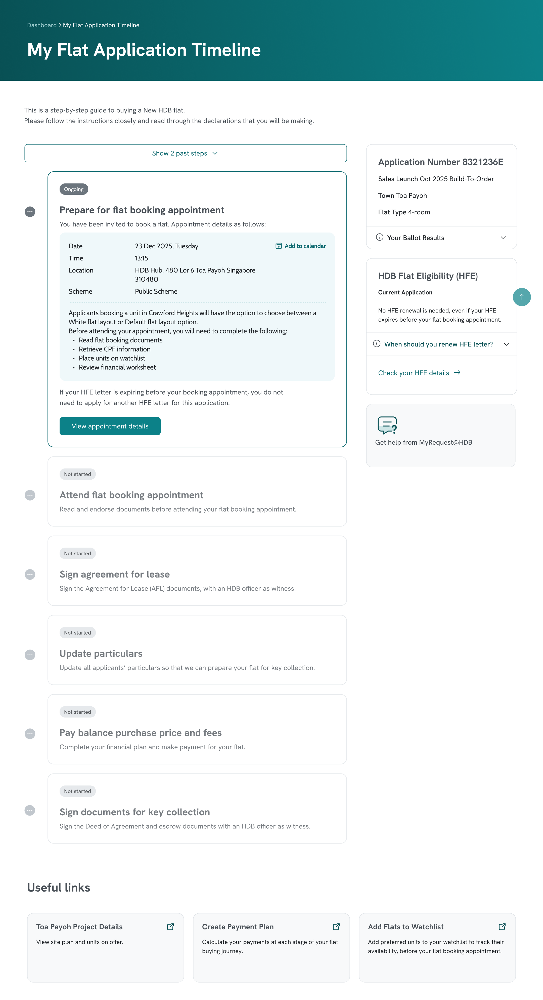
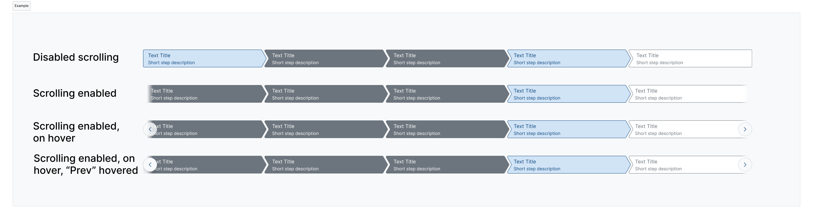
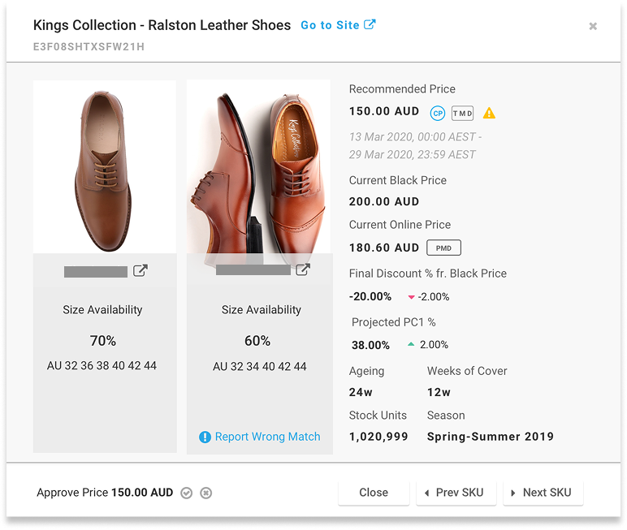

Colette Fung
Senior UX Designer, Singapore
Once a sole steward of the intranet design system at Singapore's public housing authority. I set what enters it, who contributes, and how product teams build on it. Public sector now, B2B e-commerce across four markets before that.
Case Studies

One timeline, four teams, two views
Two halves of the BTO application timeline, built by different teams, brought back into one layout pattern.
HDB · Citizen service

Endorsing a new Milestone component
I counter-proposed an existing component first, and endorsed the new one only after it passed three system criteria.
HDB · Intranet design system

Product Inspector for competitor price match
A product-level view for pricing managers deciding, one product at a time, whether to match a competitor.
GFG · B2B e-commerce
From people to systems
I am a curious learner at heart, and that curiosity has shaped the way I have built my career. My bachelor's degree in Psychology gave me a strong foundation in research methods and understanding human behaviour, which has translated naturally into UX research throughout my work.
As AI continues to reshape our field, I felt the pull to look beyond design and went back to the classroom. I recently completed my Master of Science in Information Systems at Nanyang Technological University, pursued part-time alongside my full-time design role.
Rather than choosing electives closer to my existing strengths, I took on more technical ones, including Python, Java and XML for mobile, SQL, and AWS. They stretched me, and gave me a much clearer sense of how IT systems interlace with one another.
When I am not designing, you will probably find me on a hiking trail or planning my next trip. My hiking journey started with Mount Kinabalu, and two years later I made it up Mount Fuji at sunrise. These days, I keep the habit alive with occasional hikes around Malaysia and Hong Kong.
Qualifications
Education
-
2024 – 2026
Master of Science in Information SystemsNanyang Technological University, Singapore · Part-time
-
Aug 2025
UX CertificateNielsen Norman Group · Certificate ID1076703
-
2007
Diploma in Multimedia Graphic DesignHong Kong Productivity Council · Part-time
-
2003 – 2006
Bachelor of Social Sciences, PsychologyThe University of Hong Kong · Full-time
Design-related Work History
-
Apr 2023 – PresentSenior UX Designer Housing and Development Board (HDB), Singapore
Sole steward of the Intranet Design System at Singapore's public housing authority, setting contribution standards and governing component quality across product teams. Coordinates UX alignment between in-house teams and external agency partners for citizen-facing portals and e-services. Leading the redesign of application submission, balloting chance and scheme eligibility evaluation within the BTO application journey since early 2026.
-
Apr 2019 – Oct 2022UX Designer Global Fashion Group (GFG), Singapore
Product design for B2B e-commerce platforms (ZALORA, THE ICONIC, Dafiti, Lamoda) across Malaysia, Singapore, Thailand and Australia markets. End-to-end UX from discovery to delivery in an Agile environment.
-
Apr 2013 – Apr 2019Web Builder Carlson Wagonlit Singapore (CWT)
Front-end web design for corporate event websites and attendee management platforms, serving international clients including Hewlett-Packard across Asia Pacific and Japan.
Languages
- English Fluent
- Mandarin Fluent
- Cantonese Native